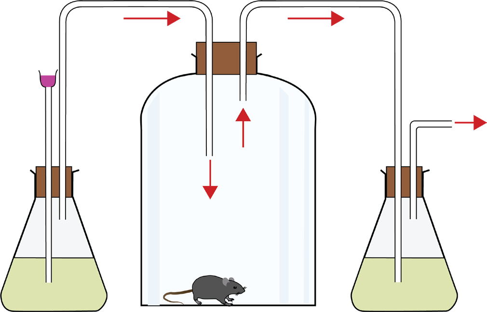

143
Student’s Book - Form Two

Biology for Secondary Schools
Procedure
1.
Set up the apparatus as shown in Figure 6.12.

Delivery tube
Conical flask
Lime water
Thistle funnel
Soda lime
Cork
Bell jar
To filter pump
Lime water
Conical flask
Mouse
Figure 6.12: Experimental set-up to demonstrate respiration in animals
2.
Apply petroleum jelly on all the openings to prevent air from entering the apparatus.
3.
Note the colour of lime water in each flask.
4.
Switch on the filter pump so that a stream of air is drawn through the set-up.
5.
Prepare a short report about your observation.
Question
What can you conclude from your observation?
Activity 6.7: Demonstrate respiration in plants
Materials
Potted plant, polythene paper, black cloth, bell jar, conical flasks, cork, lime water, soda lime, thistle funnel, delivery tubes, filter pump, and petroleum jelly
Procedure
1.
Set up the apparatus, as shown in Figure 6.13.
08/04/2026 10:18:37